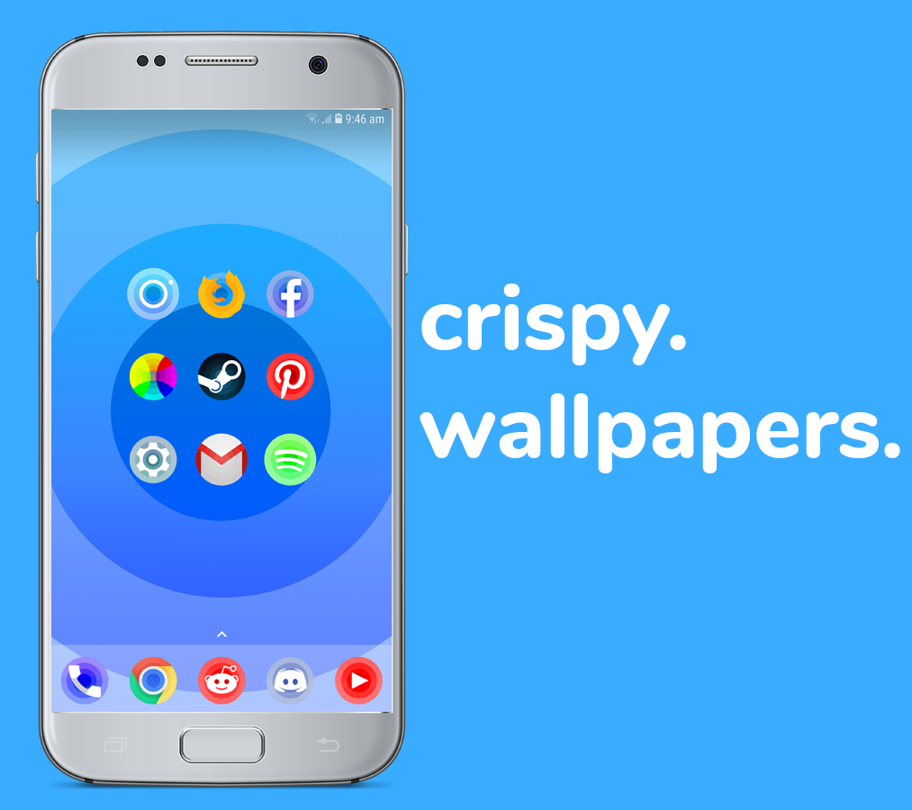
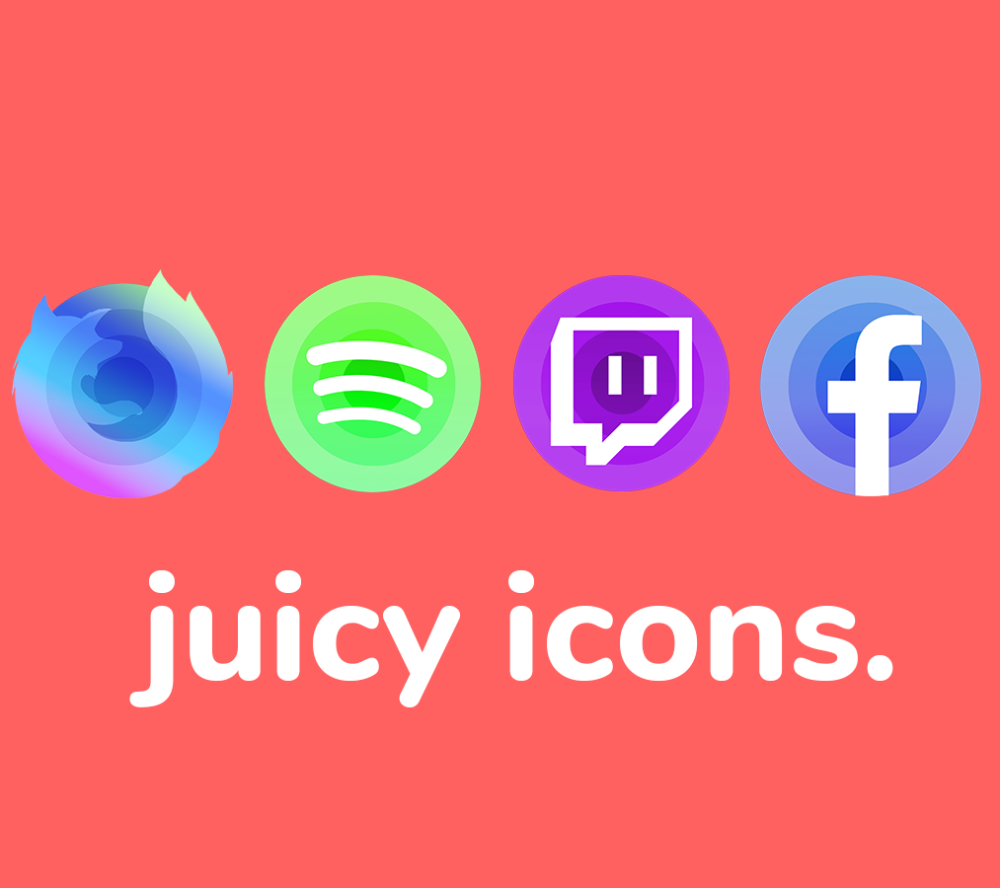
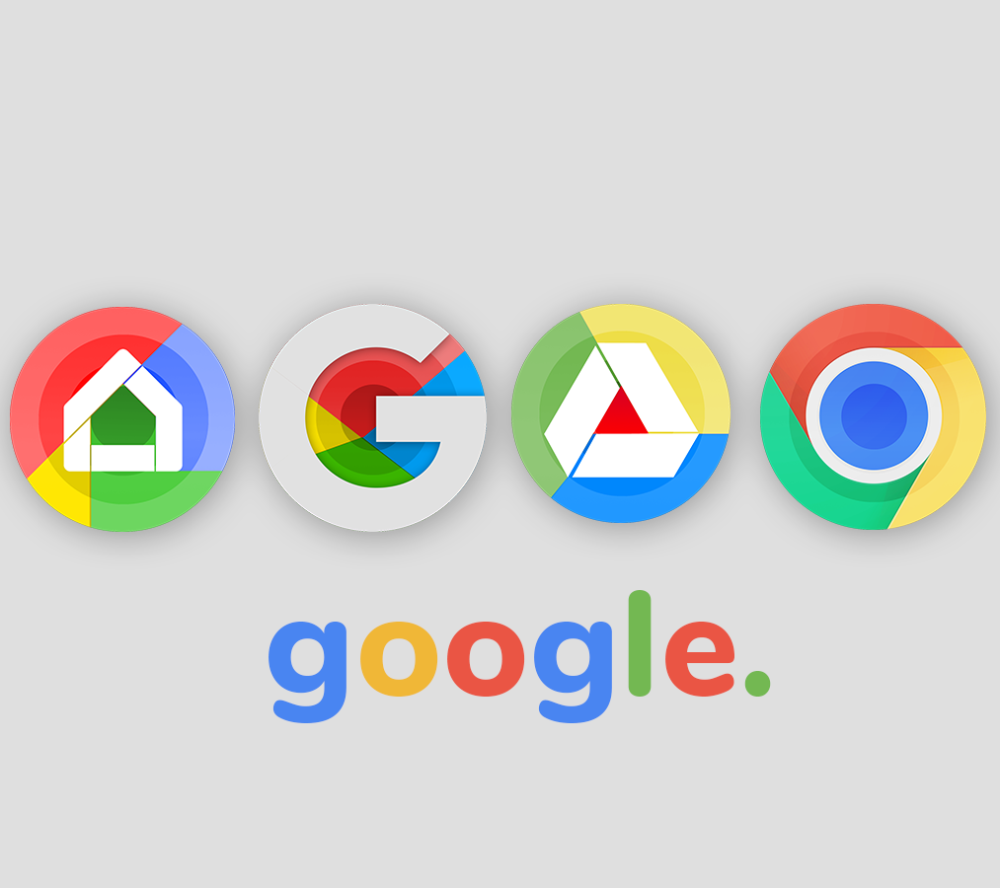
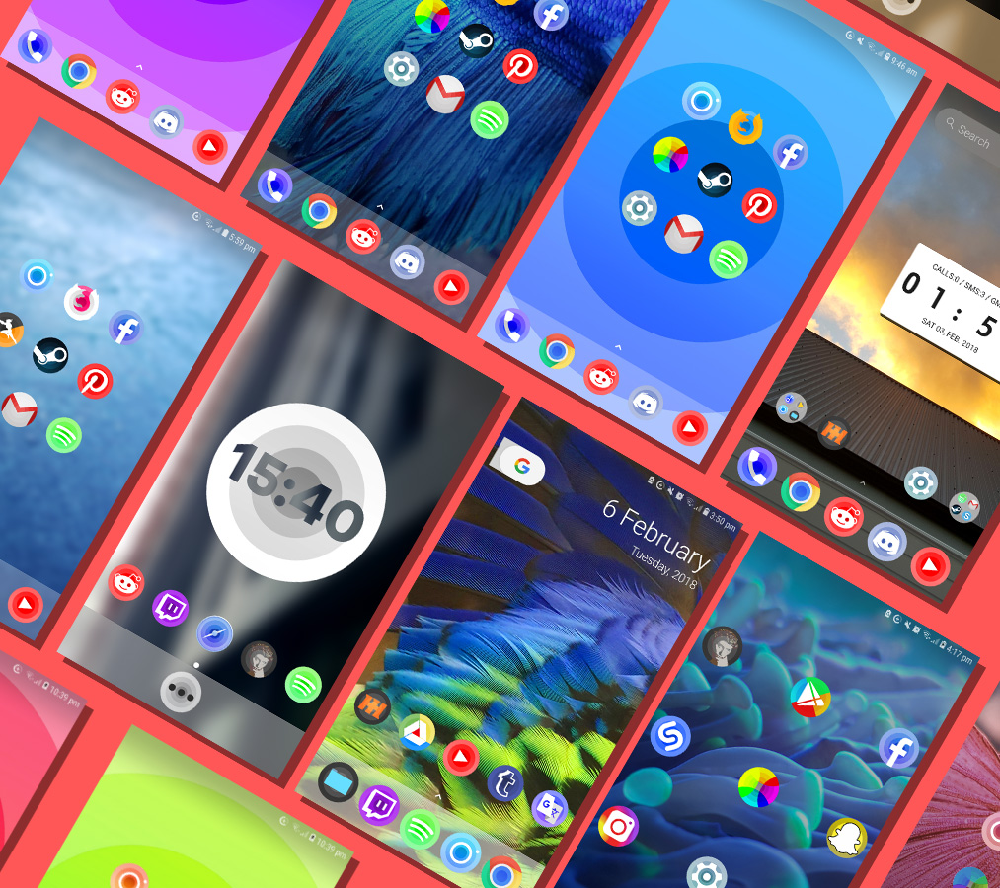

The Juiciest Icon Pack around.
Form and Function, working in unison to create the perfect user experience on Android. The Mello Icon Pack utilises extremely saturated colours and minimal, yet jam packed design in order to create an extremely elegant and appealing experience when using your Android phone. Each icon has been completely redesigned; based around one common shape, a scope layer of circles. This lays the foundation to create the icon. It is used in every one of the 700+ icons and counting.